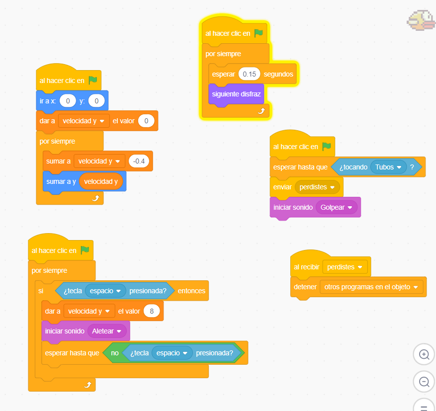
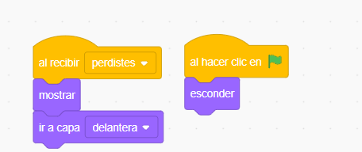
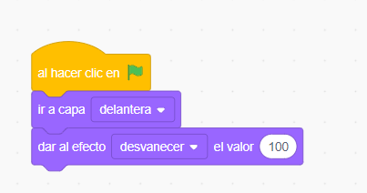
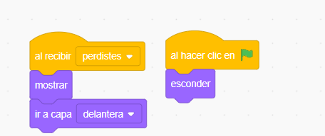
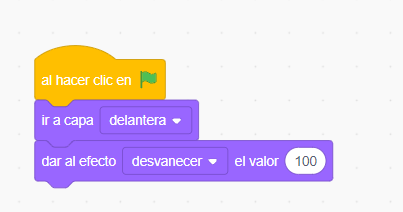

Descripción
Versión del famoso juego Flappy Bird adaptada al micro:bit. Controla un pájaro que debe esquivar obstáculos usando los botones.
Materiales necesarios
- 1 micro:bit
- Batería portátil
Funcionamiento
Presiona el botón A para hacer que el pájaro "vuele" hacia arriba. Los obstáculos se mueven de derecha a izquierda. El juego termina si chocas y muestra tu puntuación.
Conceptos aprendidos
- Desarrollo de videojuegos
- Física simple (gravedad)
- Detección de colisiones
- Sistema de puntuación
- Bucles de juego
- Sprites y movimiento
Código del Proyecto
 


